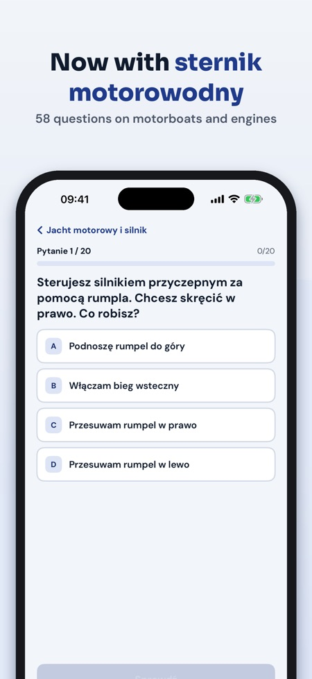
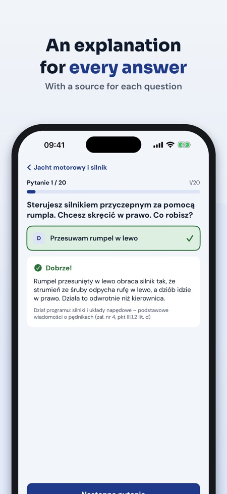
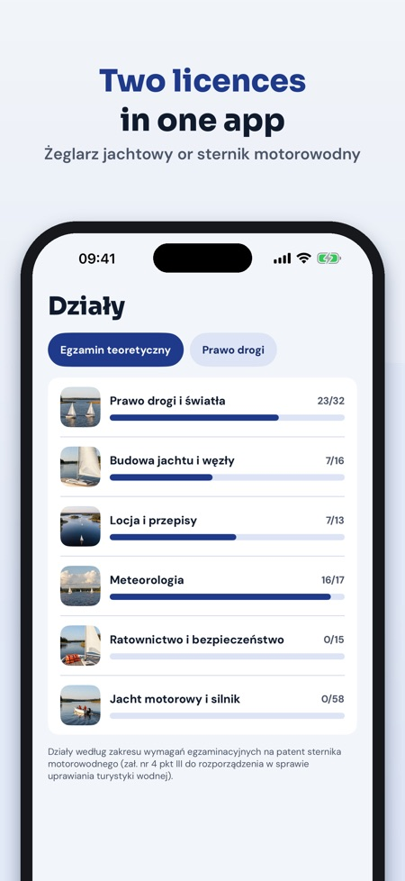

Węzły, COLREG, locja i meteo. Theory practice for two Polish licences – yacht sailor (żeglarz jachtowy) and motorboat helmsman (sternik motorowodny): explained questions and mock exams, offline.



Żeglarz Jachtowy Testy helps you prepare for the theory exam for the Polish yacht sailor licence (patent żeglarza jachtowego) and, from version 1.1, the motorboat helmsman licence (patent sternika motorowodnego) – questions in Polish with an explanation for every answer.
Without a purchase you can take 1 full mock exam and use 20 questions of the chosen licence, the glossary, the right-of-way summary and the exam checklist. The full version is a one-time purchase that unlocks all questions for both licences, unlimited mock exams and mistake review. No subscription.
We wrote the questions ourselves based on the exam syllabus in the Polish regulation on water tourism. Żeglarz Jachtowy Testy is independent and not affiliated with PZŻ or any examination board. You take the exam before a board.